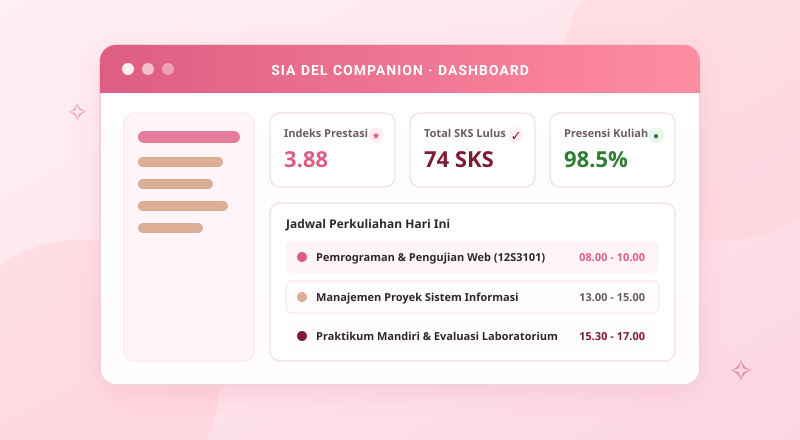

B2B Platform
B2B Platform
Marketplace Pertanian Toba
AndaliTrack
Menghubungkan petani rempah andaliman di kawasan Danau Toba langsung dengan rantai pasok industri skala besar dan pemantauan masa panen.
✧ Laguboti, Toba — Sumatera Utara ✧
Saya Davina, mahasiswa S1 Sistem Informasi Institut Teknologi Del. Saya membangun antarmuka web yang rapi, elegan, dan mudah diakses untuk semua orang menggunakan HTML5 semantik terstandarisasi dan integrasi framework Bootstrap 5.
Fokus saya ada di titik temu antara analisis proses bisnis dan tampilan yang benar-benar bisa dipakai. Saya senang membongkar kebutuhan pengguna lewat wawancara singkat, menerjemahkannya jadi alur fungsional, lalu membangunnya dengan HTML semantik dan styling CSS modern.
Di luar perkuliahan reguler, saya aktif dalam pengembangan sistem informasi berbasis komunitas di kawasan Danau Toba dan mengeksplorasi integrasi komponen UI interaktif multi-perangkat.
Empat proyek unggulan yang merefleksikan perpaduan perancangan sistem informasi, UI kontemporer Bootstrap 5, dan kepekaan sosial.
B2B Platform
Marketplace Pertanian Toba
Menghubungkan petani rempah andaliman di kawasan Danau Toba langsung dengan rantai pasok industri skala besar dan pemantauan masa panen.
 Community
Community
Situs Statis & Kolaborasi
Komunitas daring bagi mahasiswa IT untuk menemukan rekan tim lomba hackathon dan tugas perkuliahan dengan desain antarmuka bergaya RPG retro.
 Healthcare
Healthcare
Kesehatan Anak & Posyandu
Aplikasi pencatatan jadwal imunisasi balita dan kurva pertumbuhan berat/tinggi badan bagi orang tua dan kader posyandu desa.

AkademikPortal Mahasiswa & Monitoring
Dasbor ringkas bagi mahasiswa IT Del untuk memantau indeks prestasi, status pemenuhan SKS, notifikasi nilai, dan jadwal praktikum harian.
Daftar mata kuliah inti yang telah dan sedang ditempuh pada Program Studi S1 Sistem Informasi Institut Teknologi Del.
| Kode MK | Nama Mata Kuliah | Bobot SKS | Status Perkuliahan |
|---|---|---|---|
| 12S3101 | Pemrograman dan Pengujian Aplikasi Web | 3 SKS | Berjalan ✧ |
| 12S2103 | Pemrograman Berorientasi Objek | 3 SKS | Lulus ♡ |
| 12S2205 | Sistem Operasi | 3 SKS | Lulus ♡ |
| 12S3204 | Manajemen Proyek Sistem Informasi | 2 SKS | Lulus ♡ |
| 12S1102 | Basis Data | 3 SKS | Lulus ♡ |
| Total SKS Terdata | 14 SKS Tercatat | ||